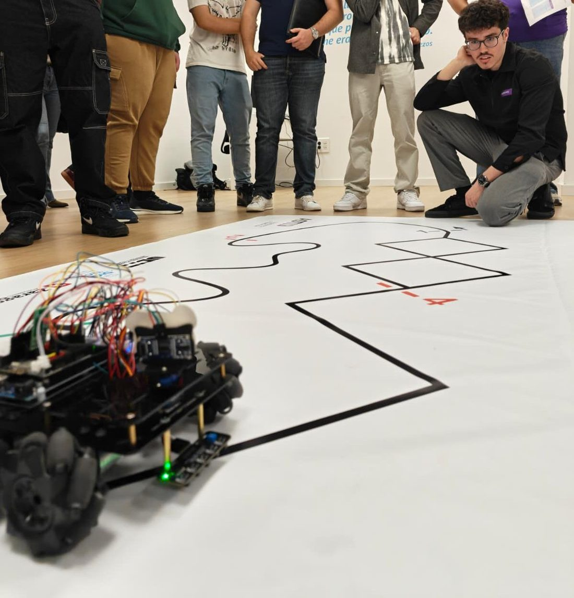
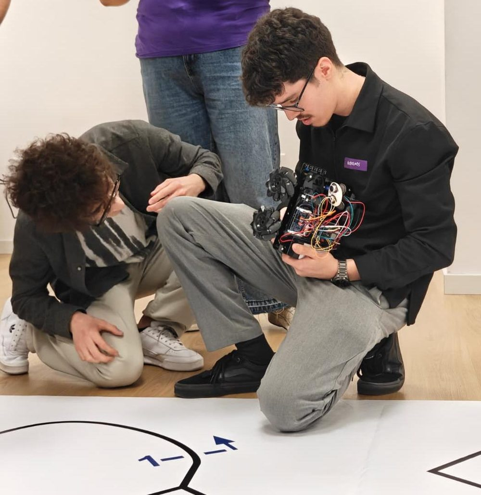
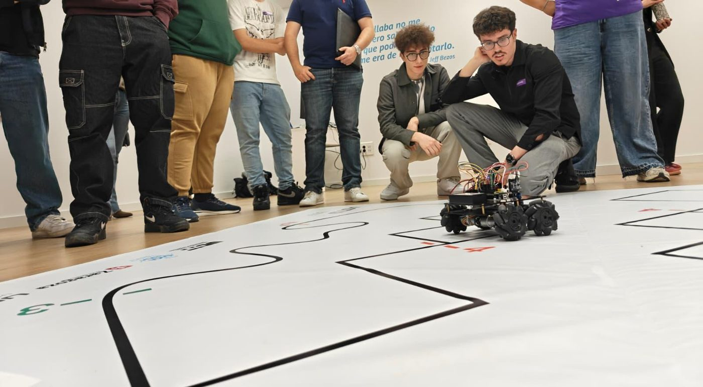
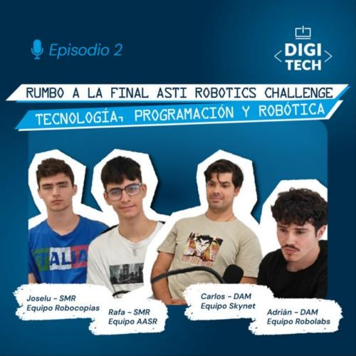

ASTI Robotics Challenge 2026 · Final en Burgos
El robot, prueba a prueba
Programé en Arduino un robot con ruedas mecanum para competir en el ASTI Robotics Challenge. Cada prueba pedía algo distinto, así que hice un programa para cada una. Aquí cuento qué hace cada uno y por qué lo resolví así.


Adaptar el código al robot
Un programa que en teoría está bien no sirve si el robot no responde como se espera. Este chasis tiene sus limitaciones, y buena parte del trabajo fue ajustar el software a cómo se comporta el hardware de verdad.
Mini sumo
Dos robots en un ring. Gana el que saca al otro. El reto no es solo empujar: el robot tiene que encontrar al rival, ir a por él y, sobre todo, no salirse solo.
El programa decide en cada vuelta del loop() según un orden de prioridades fijo:
Qué hace en cada momento
- No salirse del ringSi cualquiera de los 5 sensores ve la línea del borde, frena, retrocede y gira hacia dentro. Esto se comprueba antes que nada.
- AtacarSi el ultrasonidos ve al rival dentro del rango, avanza hacia él. Cuando está cerca, pasa a velocidad de embestida.
- Embestida a ciegasSi acaba de verlo y lo pierde, sigue empujando unos ciclos más en vez de ponerse a buscar.
- BuscarSi no ve nada, gira sobre sí mismo hasta encontrarlo.
Dos versiones
Probé dos formas de buscar al rival. En la primera el sensor va fijo y es el robot entero el que gira. En la segunda el sensor va encima de un servo que barre de un lado a otro, como un radar, y el robot recuerda en qué lado lo vio.
| Parámetro | Sensor fijo (V4.0) | Radar con servo |
|---|---|---|
| Distancia a la que detecta | 45 cm | 30 cm |
| Distancia para embestir | 20 cm | 40 cm |
| Velocidad de búsqueda (0–255) | 100 | 120 · 90 mientras barre |
| Velocidad de ataque | 140 | 120 |
| Velocidad al escapar del borde | 140 | 200 |
| Embestida a ciegas | 25 ciclos | 40 de frente · 15 de lado |
| Maniobra de escape | 350 ms atrás + 350 ms giro | 300 ms atrás + 400 ms giro |
| Barrido del servo | — | 40° a 140°, de 10° en 10° |
Por qué lo hice así
- El borde va primeroSalirse es perder el combate al momento, así que leer los sensores de línea es lo primero del
loop(). Da igual lo cerca que esté el rival: si toca el borde, escapa. - Escapa hacia el lado contrarioSi el borde lo ven los sensores de la izquierda, gira a la derecha, y al revés. Si solo lo ve el del centro, gira más tiempo para darse la vuelta casi entera.
- Una pausa antes de dar marcha atrásAntes de retroceder para 40–50 ms. Pasar de ir hacia delante a ir hacia atrás de golpe castiga los motores y la transmisión.
- La embestida a ciegasEl ultrasonidos tiene un punto ciego: cuando el rival está pegado al robot, deja de verlo. Sin esta memoria, el robot se pondría a buscar justo cuando lo tiene delante empujando.
- Velocidades bajas en la versión V4.0Con más velocidad el robot pierde tracción y, al chocar, la inercia lo puede sacar del ring a él. Girando más despacio al buscar tampoco se salta al rival entre una medida y la siguiente.
- Romper el bucle de búsquedaSi pasa 5 segundos girando en el sitio sin ver nada, avanza medio segundo para cambiar de posición. Así no se queda dando vueltas eternamente en un punto desde el que no ve al rival.
- Temporizadores con
millis()La búsqueda no usadelay()para contar esos 5 segundos. Si lo hiciera, el robot estaría «dormido» y no leería el borde mientras tanto. - Sin eco no significa 0 cmSi el ultrasonidos no recibe eco, la función devuelve 999 en vez de 0. Si devolviera 0, el robot creería que el rival está pegado y atacaría a nada.
- Detectar solo dentro del ringEn la versión radar bajé el rango a 30 cm para que no detectara objetos de fuera del ring.
- Esperar 5 segundos al empezarLo exige el reglamento del ASTI, así que el robot se queda parado al arrancar.
Siguelíneas
El robot tiene que recorrer un circuito siguiendo una línea negra lo más rápido posible y sin perderla en las curvas.
Los 5 sensores se juntan en un único número de 5 bits, uno por sensor, de izquierda a derecha. Así cada situación es un número y el programa decide con un switch:

Qué hace según lo que ve
Por qué lo hice así
- Un número en vez de muchos
ifCon 5 sensores hay muchas combinaciones. Convertirlas en un número de 5 bits deja cada caso en una línea delswitchy se ve de un vistazo qué hace el robot en cada situación. - En curvas suaves no paro ninguna ruedaSi paro del todo el motor de dentro de la curva, el robot va a tirones y vibra. Dejándolo a 70 en vez de a 0, gira de forma continua y no pierde velocidad.
- Recordar el último ladoEn una curva cerrada la línea se sale por un lado antes de desaparecer. Si guardo ese lado, cuando no ve nada sabe hacia dónde girar para recuperarla en vez de ir a ciegas.
- Ignorar lecturas rarasCombinaciones que no tienen sentido, como sensores sueltos encendidos por un reflejo, caen en el
defaulty el robot sigue con lo que estaba haciendo. Así un fallo puntual de lectura no le hace dar un volantazo.
El robot tiene que dibujar figuras sobre papel con unas medidas concretas: un cuadrado, un rectángulo y un triángulo.
El problema es que este robot no tiene encoders, así que no sabe cuánto ha girado cada rueda. La solución fue medir con el tiempo: calibré cuánto tarda en avanzar 1 cm y en girar 1 grado, y con eso escribí dos funciones que reciben centímetros y grados.
Calibración
Avanzar 1 cm: 75 ms a velocidad 160.
Girar 1°: 6 ms a velocidad 130.
Cómo se dibuja una figura
Cada figura es una lista de tramos rectos y giros a la izquierda, con una pausa entre uno y otro. Todo va en setup() para que la dibuje una sola vez.
El software se adaptó al robot
En esta prueba se notó más que en ninguna. Las ruedas mecanum tienen rodillos que patinan un poco, los motores no responden todos igual y no hay encoders para corregir sobre la marcha. Si le pides al robot 20 cm y 90°, no hace 20 cm y 90°.
Así que hubo que ajustar el programa al robot y no al revés: se dibujaba la figura, se medía lo que había hecho de verdad y se corregían los valores hasta que salía bien. Por eso los números que se pasan a avanzar() y girarIzquierda() no son las medidas del enunciado. Son los que funcionan con este robot. Por ejemplo, para que gire 90° de verdad, el código le pide 72.
// Esquina de 90° en el papel girarIzquierda(72); // valor ajustado probando con el robot
// Avanza los centímetros pedidos usando el tiempo calibrado
void avanzar(int centimetros) {
forward(MAX_SPEED, MAX_SPEED);
delay(centimetros * TIEMPO_1CM);
stop_bot();
}
Por qué lo hice así
- Funciones en centímetros y gradosAsí cada figura se escribe con distancias y ángulos, y no con milisegundos sueltos. Si cambia la batería o el suelo, el robot se comporta distinto y hay que volver a ajustar los valores.
- Pausas de 400 ms entre tramosAl frenar, el robot todavía se mueve un poco. Esperar a que se quede quieto antes del siguiente movimiento hace que cada tramo y cada giro salgan iguales.
- Girar sobre su propio ejePara girar, las ruedas de un lado van hacia delante y las del otro hacia atrás. Así el robot gira sin desplazarse y la esquina queda en su sitio.
- 3 segundos antes de empezarEs el tiempo que tengo para soltarlo bien colocado sobre el papel después de encenderlo.
Control por WiFi
Además de las pruebas, en el repositorio están dos ejemplos del fabricante. Con el control por WiFi el robot crea su propia red y se maneja desde una app del móvil, que le envía una letra por cada botón. Aquí se ve la gracia de las ruedas mecanum: además de avanzar y girar, el robot se puede mover de lado y en diagonal sin girar el cuerpo.
Estos dos programas parten de los tutoriales de Osoyoo para este chasis. En robot.ino dejé mis anotaciones mientras lo estudiaba. El mini sumo, el siguelíneas y las figuras los escribí yo.
El podcast

Código Abierto · Digitech FP · Episodio 2 · Mayo 2026 · 34 min
Rumbo a la final: robótica y tecnología en ASTI Robotics Challenge
Antes de la final, el podcast de mi centro reunió a estudiantes de varios equipos de Digitech para contar cómo empezó cada proyecto, qué tecnologías usamos y cómo fue preparar la competición. Yo participé por el equipo Robolabs.
Escuchar en Spotify